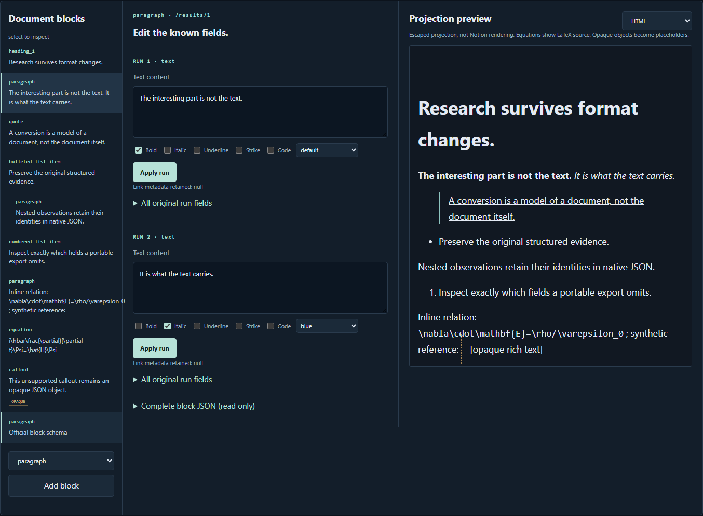

Preserve the unfamiliar
Unknown block types and inline mentions remain opaque, inspectable JSON objects. Their payloads survive native export unchanged. Known blocks retain unknown fields while individual text runs and equations can be edited.
Research Block Fidelity · A separate local note editor with a Windows app and browser version
A readable copy of a rich note may lose details such as formatting, equations or unfamiliar content blocks. This editor keeps the richer structured data and shows what its own Markdown or HTML export cannot carry across.
No login. No API credentials. No upload. Synthetic notes are loaded initially.
Suppose you want to move research notes into plain-text notes or a web page. The words may survive while some structure disappears. You want to see those compromises before saving, and keep a fuller copy in case you need the original details later.
A concrete example. Load the sample note and edit a piece of text or an equation. Content the editor does not understand stays in the richer saved data. In the simpler export, it may become a placeholder or lose a property; the export report names those losses and asks you to acknowledge them.
Start with the example, or a supported local JSON file containing note blocks and their properties.
Change supported text or equations. Preview a simpler export and read the list of details it would omit.
Keep this editor's richer project file as well as the readable export and its loss report.
What this page shows. The browser opens an invented research note. It needs no Notion login and does not upload your files. It is not a full Notion page renderer.
Where it runs and what is still untested. This is independent software, not a modified Notion client, and it does not save changes to a Notion account. The loss report describes this editor's exports, not Notion's own export features. Live Notion compatibility remains unverified.

TWO DIFFERENT PROMISES
Unknown block types and inline mentions remain opaque, inspectable JSON objects. Their payloads survive native export unchanged. Known blocks retain unknown fields while individual text runs and equations can be edited.
Change one run's content or annotation without flattening adjacent styles. Imported IDs, metadata and field structure remain in place. The original baseline stays in the project; a semantic differential names each changed JSON path.
Portable previews enumerate omitted IDs, colors, annotations, opaque content and nested relationships. Export requires acknowledgement. Save a separate machine-readable loss report and a native project alongside the readable projection.
Notion already provides official Markdown page APIs, including recommended Notion-flavored Markdown v2. notion-to-md already supplies broad conversion workflows. This project makes a narrower local contract visible: imported structured JSON, per-run edits, preserved unknown objects, and explicit findings for its own portable projections. It does not reproduce the full Notion client or claim a new conversion category.
| Output | Preserves | Does not promise |
|---|---|---|
| Native .fidelity.json | Accepted imported JSON values, current document and original baseline | Byte formatting, numeric lexemes, original key order or cloud synchronization |
| API-shaped JSON | Current structured document including opaque fields | A valid create/update request or server acceptance |
| Portable HTML | Escaped readable text, safe links and basic inline annotations | Notion styling, rendered mathematics, opaque content or recoverable metadata |
| Conservative CommonMark | Escaped readable subset, basic headings/lists/quotes, bold/italic and safe links | Underline/code/strike formatting, colors, exact list nesting or native reconstruction |
Core contract tests cover unknown fields and blocks, nested children, annotation-preserving edits, equations, semantic round trips, unsafe HTML/URLs, prototype keys, duplicate keys and bounds. Real browser checks exercise the editor, downloads and native reimport with synthetic files. The Windows host has a separate packaged renderer/isolation smoke test.
No installed Notion client or real workspace was accessed. No server/API write was tested. This is an independently implemented, documented-schema application; no proprietary code was recovered and no REA execution is claimed.
Supported editing: paragraphs, heading levels1–3, quotes, bulleted/numbered items, block equations, text and inline-equation runs. Mentions and all other block types are opaque. No page/database-property import, credentials, live sync, collaborative editing, image retrieval, Markdown import, mathematical rendering or automatic pagination.
Imports:5 MiB; compact current/baseline document:2 MiB each;36 JSON document nesting levels (40 for the envelope);45,000 JSON values per document (100,000 for the envelope);2,000 traversed blocks;100,000 UTF-16 code units per string;1,000 rich-text runs interpreted per block. Native envelope bounds are also applied to the saved baseline plus current data. Edited text runs are limited to2,000 code units and equations to1,000, conservatively enforcing documented request-value lengths. Data with unsafe keys, duplicate names, unpaired Unicode surrogates, negative zero or unsafe/nonfinite numbers is rejected rather than normalized. JSON numbers use finite IEEE-754 values; source number spellings and decimal precision beyond that model are outside the contract.
Undo retains up to20 in-memory states. There is no automatic browser persistence. Save before closing. Unknown object payloads may contain links or sensitive metadata; native export intentionally retains them.
A readable projection is for people. A preserved native project is for checking what the projection changed.
Open Research Block Fidelity